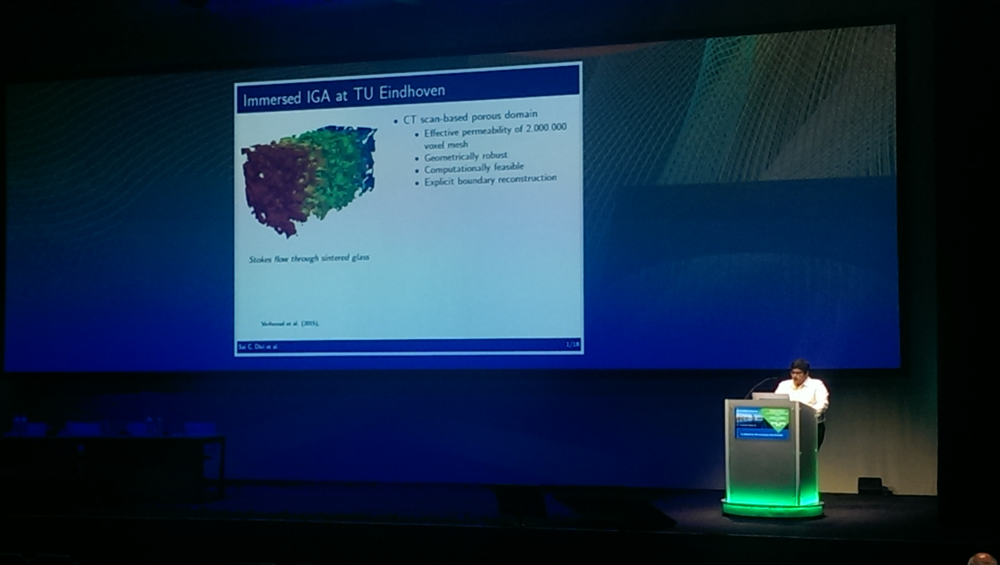
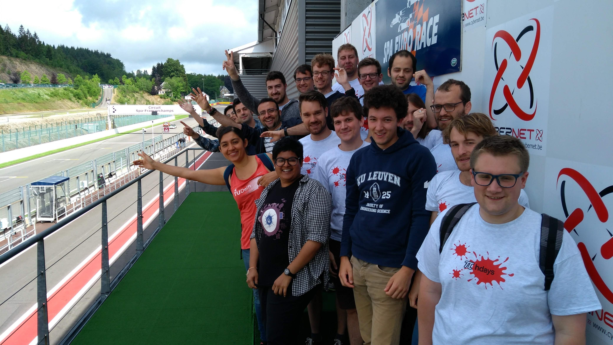

17 November 2018
An esteemed Indian newspaper published my article about benefits of an exchange-study program. This article focuses on details of the exchange programs and a special focus on my experience of being involved in it during my master studies. I hope this article would give insights into the exchange programs in Europe and encourages upcoming students to pursue an exchange program in Europe or elsewhere.
The article can be found here: https://www.thehindu.com/education/an-exchange-spree/article25525337.ece
16 June 2018
After starting the research career in the field of computational mechanics, for the first time this year I have presented my work in a scientific-gathering. Together with my colleagues, I have travelled to Glasgow in Scotland, United Kingdom. I was very nervous about my talk, especially because it was in a massive room with a huge capacity of expert researchers in the field of computational mechanics. After the presentation, I had a discussion with Prof. Ernst Rank (Former-director of Institute of Advanced Study (IAS) at the Technical University Munich (TUM) and father of Finite Cell Method). It was nice to get his feedback and suggestions of my current work. Addtionally, Dr. Ruben Sevilla, my mentor and one of my teachers at Swansea University, attending my talk and said that it was nice to see my progress in the field of computational mechanics. He clicked the photo below and wrote a personal mail specifying how happe he was to see my progress from first day at Swansea to this day. It was a great pleasure to have such a good support from the members of the research community.
Presenting at the conference. Source: Dr. Ruben Sevilla (Associate Professor, Swansea University)
01 June 2018
The Dutch-Flemish Scientific Computing Society is a research community which unites scientific researches in numerical mathematics and scientific computing. They conduct an annual spring meeting to give a platform to both young and senior researchers to present their research work. After the meeting, PhDays is conducted, where all the PhD members plan a few fun activites and go on a weekend away. This year I took part in it and we visited a few beautiful places around Xhoffraix, Belgium. We also did a few fun activities like tour a formula-1 race circuit in Spa and a local beer brewery near Malmedy, quiz, barbecue, etc.. Along with fun, it was a perfect chance to meet other PhD students in the scientific computing society.
At the formula-1 circuit in Spa. Source: Pieterjan Robbe (PhDays organizer)